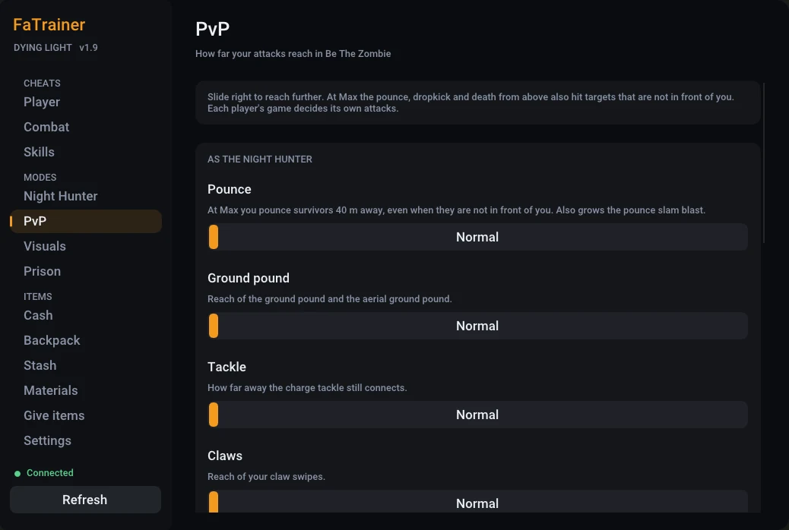

v1.9 / Dying Light 1 / Windows and Linux
A trainer that runs inside the game
One file next to DyingLightGame.exe. Press Insert in Harran and a menu opens over the game: god mode, items, a weapon editor, skill levels, Harran Prison timers and the reach of every Night Hunter attack.
- File
- xinput1_3.dll, no installer
- Opens with
- Insert or F8, any key you pick
- License
- MIT, free

02 Install
Copy one file
The game loads xinput1_3.dll from its own folder, so the trainer starts with it. Delete the file to remove it.
Windows
Download the zip and take
xinput1_3.dllout of it.In Steam, right-click Dying Light, then Manage, then Browse local files.
Put the file next to
DyingLightGame.exeand start the game.Press Insert or F8 once you are in game.
Linux, Steam with Proton
Put
xinput1_3.dllnext toDyingLightGame.exe, as on Windows.-
Tell Proton to use it. In the game's Properties, paste this into Launch options:
WINEDLLOVERRIDES="xinput1_3=n,b" %command% Start the game and press Insert or F8.
03 Before you play
Read this first
- Back up your saves
Item, level and rank changes are saved by the game like any other progress. Keep a copy of your save folder before you try something big.
- Other players
In co-op and Be The Zombie the trainer changes your game, and through it, theirs. Turn things off when you play with people who did not agree to it.
- Techland's rules
Modifying the game online may break Dying Light's terms of use. Any action Techland takes against an account is between you and Techland.
- If something breaks
The trainer writes
fatrainer.lognext to the game. Attach it when you report a problem on GitHub.
04 Changes
What is new
The full history is in CHANGELOG.md.
- NewVisuals page: a player ESP for Be The Zombie and co-op, and your own UV light color.
- NewSpit hit radius slider and spit keys on the Night Hunter page.
- NewNamed configs on the Settings page.
- NewDeath from above height: start it from a normal jump.
- FixedCrashes and stutter while the ESP or one hit kill was on.
- FixedPvP sliders and other cheats stopping after you die.
- FixedOne hit kill no longer drops Be The Zombie nests to 1 health.